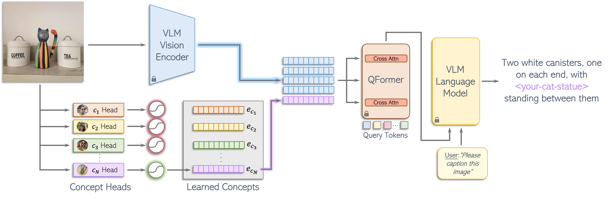

MyVLM
Personalizing VLMs for User-Specific Queries
1,2 2 1 1 1,21Snap Inc.
2Tel Aviv University
Introducing MyVLM

Given a set of images depicting user-specific concepts such as <you>, <your-dog>, and <your-friend> (left), we teach a pretrained vision-language model (VLM) to understand and reason over these concepts. First, we enable the model to generate personalized captions incorporating the concept into its output text (middle). We further allow the user to ask subject-specific questions about these concepts, querying the model with questions such as "What are <you> doing?" or "What is my <your-friend> wearing?" (right).
How Does It Work?
The VLM
We use a pretrained, frozen vision-language model to maintain the general capabilities of the model.
Step 1: Feature Extraction
Given an image, we extract the frozen image features from the VLM's vision encoder.
Step 2: Recognizing the Concept
We utilize a set of concept heads, each designed to recognize the presence of a user-specific concept within the image.
Step 3: Communicating the Concept
We train a concept embedding to represent the concept and guide the LLM to incorporate the concept into its personalized response.
Results
- For each row, we show sample images of the target concept to the left
- The remaining images represent the input images passed to MyVLM
- Personalized responses generated by MyVLM can be seen by hovering over each image
- S* represents our concept's name
Personalized Captioning
Hover over the images to see the personalized captions!


Personalized Visual Question-Answering
Personalized Referring Expression Comprehension
Hover over the images to see the personalized captions!
Acknowledgements
This research was performed while Yuval Alaluf was at Snap.
We would like to thank Assaf Ben-Kish, Jackson Wang, Moran Yanuka, Morris Alper, Or Patashnik, Yonatan Biton, and Yuwei Fang for their fruitful discussions and valuable input which helped improve this work.
BibTeX
@misc{alaluf2024myvlm,
title={MyVLM: Personalizing VLMs for User-Specific Queries},
author={Yuval Alaluf and Elad Richardson and Sergey Tulyakov and Kfir Aberman and Daniel Cohen-Or},
year={2024},
eprint={2403.14599},
archivePrefix={arXiv},
primaryClass={cs.CV}
}
Template created by Yuval Alaluf, based on HTML5up Hyperspace. Feel free to reuse.